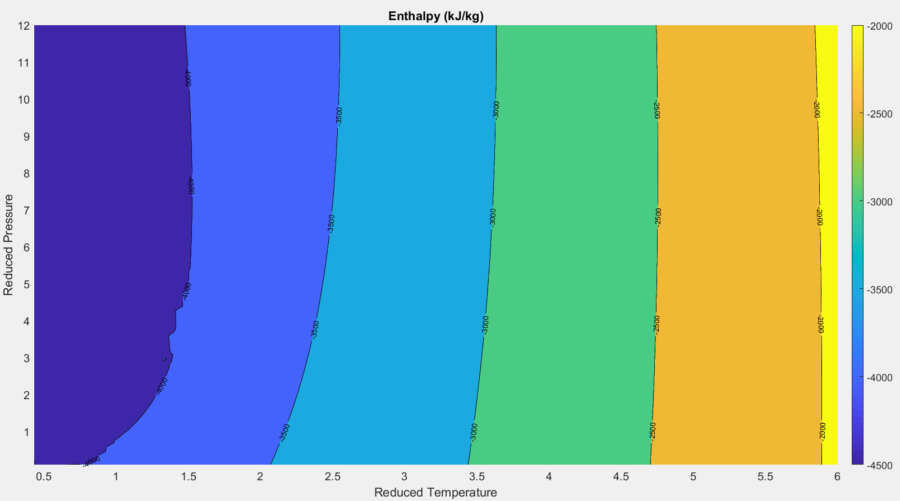

Hydrogen Phase Diagram
As shown in the previous section, the reduced Helmholtz equation of state can be broken into two components, one modeling ideal gas effects ($\alpha^0$), and the other corresponding to the residual contribution from intermolecular forces ($\alpha^r$). This equation of state allows for construction of a phase diagram that is more nuanced than the “four quadrant” model described in Section 2.1. The figures below present phase diagrams for hydrogen generated with the Helmholtz equation of state.
Figure 2.2.1
Figure 2.2.2
The surface contour on these figures shows how the reduced density, $\frac{\rho }{\rho_c}$, of hydrogen varies as a function of the reduced temperature, $\frac{T}{T_c}$, and reduced pressure, $\frac{P }{P_c}$. Properties identified with a subscript “c” represent the density, temperature, and pressure at the critical point:[11]
$\rho_c = \text{31.112}\ \frac{\text{kg}}{m^3} $
$T_c = \text{32.938 K}$
$P_c = \text{1.284 MPa}$
Along the saturation line a discontinuity in the density field is clearly visible. This makes physical sense, as the saturation line represents the locations where the hydrogen is undergoing a distinct phase change (boiling or condensing).
Above the critical point, the state of the fluid becomes less well defined. A “pseudo-boiling line”[5] is clearly visible in Figures 2.2.1 and 2.2.2. Along the this line where $\frac{\rho }{\rho_c}$ is approximately 1.2 – 1.4 there is a definite transition between the liquid and gaseous states, but the transition happens linearly and the discontinuity in the density field begins to dissipate. This trend is visible in the isochores (lines of constant density) plotted above in Figures 2.2.1 and 2.2.2, and again in the plots along the sub-critical (red), near-critical (blue), and super-critical (green) isobars shown below in Figure 2.2.3.
Figure 2.2.3
The model presented here contains some turbulence along the both the saturation curve and the pseudo-boiling line. Mathematical difficulties arise in performing property calculations in close proximity to these lines. Details regarding this are discussed further below in the mathematics section. Some turbulence also exists in the upper left quadrant of the chart (the region with low temperatures and high pressures). This region is close to the hydrogen freezing/melting line. The Helmholtz equation of state is not designed to calculate the thermodynamic properties of solid hydrogen.
The figures above clearly show that the “quadrants” established by the traditional phase diagram (Figure 2.1.3) do not necessarily correspond to meaningful physical differences in the thermodynamic properties of the fluid. One good way to further visualize this is to introduce the concept of the compressibility factor, Z:
This expression is simply a re-arranged form of the ideal gas law. It represents the ratio of the real fluid pressure (accounting for the intermolecular forces significant in liquids) to the pressure that would be exerted by an ideal gas at the same conditions. The ideal gas equation of state holds true when Z=1. Figure 2.2.4 plots the compressibility factor for hydrogen factor as a function of reduced temperature and pressure.
Figure 2.2.4
The Z = 1 line is clearly visible. But there is also a significant region in the reduced P-T surface where the compressibility factor deviates less than 5 percent from the ideal value ( between Z = 0.95 and Z = 1.05). This trend indicates that for hydrogen, in the region where Tr >2.25 and Pr < 5, one can describe the fluid as either “supercritical” or an “ideal gas” with minimal contradiction.[5]
The figure below plots the enthalpy of hydrogen across the reduced P-T plane. Notice how for higher temperatures enthalpy becomes a function of temperature alone (nearly independent of pressure). At low temperatures and pressures near the critical point, enthalpy is not independent of pressure.

Figure 2.2.5
Figure 2.2.6 plots the specific heat of hydrogen as function of reduced density and temperature. The points overlaid on top of this figure correspond to the turbomachinery stations described in Section 1.1 . This provides a visual representation of how the thermodynamic properties of hydrogen change is it flows through the SSME turbomachinery, all the way from the external storage tank to the pre-burner inlets. Figure 2.2.7 shows how specific heat peaks when transitioning over the saturation and pseudo-boiling lines.
Figure 2.2.6
| Station | Component | $\frac{P}{P_c}$ | $\frac{T}{T_c}$ |
|---|---|---|---|
| 1 | Low Pressure Fuel Turbopump Inlet | 0.2 | 0.6 |
| 4 | High Pressure Fuel Turbopump Exit | 31.6 | 1.6 |
| 7 | Nozzle Cooling Jacket Exit | 28.7 | 10.2 |
| 9 | Combustion Chamber Liner Exit | 23.6 | 8.1 |
| 13 | Fuel Pre-Burner H2 Inlet | 28.2 | 4.6 |
| 14 | Oxidizer Pre-Burner H2 Inlet | 28.2 | 4.6 |
Table 2.2.1

Figure 2.2.7
Orthohydrogen and Parahydrogen
One additional factor that must be considered when analyzing the thermodynamic properties of hydrogen is the orientation of the molecule’s nuclear spin. A hydrogen molecule consists of two protons. Each proton has a quantized spin motion oriented perpendicular to the molecular axis. The nuclear spin of these two protons could be aligned with each other (parallel) or rotated 180 degrees apart (anti-parallel). Hydrogen with a parallel spin orientation is referred to as orthohydrogen. Hydrogen with an anti-parallel spin orientation is referred to as parahydrogen.[14]
To model these effects, hydrogen can be treated as a mixture of orthohydrogen and parahydrogen, the exact composition of which is temperature dependent. At temperatures above 300 K, hydrogen contains 75% ortho molecules and 25% para molecules. This composition is commonly referred to as “normal” hydrogen.[11] At cold temperatures below the critical point, the composition consists almost exclusively of para molecules. Figure 2.2.8 plots hydrogen composition as a function of temperature.
Figure 2.2.8
Mathematical Details
Referring to back to Section 2.1, a reduced reciprocal temperature ($\tau$) and a reduced density ($\delta$) are plugged in to the Helmholtz model (Equation 2.1.7). The model returns the ideal gas ($\alpha^0$) and residual ($\alpha^r$) contributions of the Helmholtz energy. Taking derivatives of these contributions with respect to $\tau$ and $\delta$ and allows many different thermodynamic properties to be calculated. The subscripts in the following equations indicate derivatives with respect to $\tau$ and $\delta$. One subscript represents the first derivative, and two represent the second derivative. For example,
$$\alpha^r_\tau = \frac{\partial\alpha^r}{\partial\tau}$$
$$\alpha^r_{\tau\delta} = \frac{\partial^2\alpha^r}{\partial\tau\partial\delta}$$
Equations for the relevant thermodynamic properties are presented below.[12]
$P$ = pressure $($Pa$)$
$h$ = enthalpy $($J/kg$)$
$s$ = entropy $($J/kg K$)$
$C_v$ = isochoric heat capacity $($J/kg K$)$
$C_p$ = isobaric heat capacity $($J/kg K$)$
$Z$ = compressibility factor [13]
The ideal and residual components of the Helmholtz correlation are modeled by the following empirical curve fits: [11]
Closed-form solutions for the derivatives of Equations 2.2.8. and 2.2.9 were calculated with symbolic manipulation software. The resulting expressions are too lengthy to display here.
The following table contains the coefficients used in Equations 2.2.8 and 2.2.9.
| $a_{k}$ | Parahydrogen | Orthohydrogen |
|---|---|---|
| $a_{1}$ | -1.4485891134 | -1.4675442336 |
| $a_{2}$ | 1.884521239 | 1.8845068862 |
| $a_{3}$ | 4.30256 | 2.54151 |
| $a_{4}$ | 13.0289 | -2.3661 |
| $a_{5}$ | -47.7365 | 1.00365 |
| $a_{6}$ | 50.0013 | 1.22447 |
| $a_{7}$ | -18.6261 | - |
| $a_{8}$ | 0.993973 | - |
| $a_{9}$ | 0.536078 | - |
Parahydrogen: N = 9
Orthohydrogen N = 6
| $b_{k}$ | Parahydrogen | Orthohydrogen |
|---|---|---|
| $b_{3}$ | -15.1496751472 | -25.7676098736 |
| $b_{4}$ | -25.0925982148 | -43.4677904877 |
| $b_{5}$ | -29.4735563787 | -66.0445514750 |
| $b_{6}$ | -35.4059141417 | -209.7531607465 |
| $b_{7}$ | -40.724998482 | - |
| $b_{8}$ | -163.7925799988 | - |
| $b_{9}$ | -309.2173173842 | - |
Orthohydrogen N = 6
| $N_{i}$ | Parahydrogen | Orthohydrogen |
|---|---|---|
| $N_{1}$ | -7.33375 | -6.83148 |
| $N_{2}$ | 0.01 | 0.01 |
| $N_{3}$ | 2.60375 | 2.11505 |
| $N_{4}$ | 4.66279 | 4.38353 |
| $N_{5}$ | 0.682390 | 0.211292 |
| $N_{6}$ | -1.47078 | -1.00939 |
| $N_{7}$ | 0.135801 | 0.142086 |
| $N_{8}$ | -1.05327 | -0.87696 |
| $N_{9}$ | 0.328239 | 0.804927 |
| $N_{10}$ | -0.0577833 | -0.710775 |
| $N_{11}$ | 0.0449743 | 0.0639688 |
| $N_{12}$ | 0.0703464 | 0.0710858 |
| $N_{13}$ | -0.0401766 | -0.087654 |
| $N_{14}$ | 0.119510 | 0.647088 |
| $d_{i}$ | Parahydrogen | Orthohydrogen |
|---|---|---|
| $d_{1}$ | 1 | 1 |
| $d_{2}$ | 4 | 4 |
| $d_{3}$ | 1 | 1 |
| $d_{4}$ | 1 | 1 |
| $d_{5}$ | 2 | 2 |
| $d_{6}$ | 2 | 2 |
| $d_{7}$ | 3 | 3 |
| $d_{8}$ | 1 | 1 |
| $d_{9}$ | 3 | 3 |
| $d_{10}$ | 2 | 2 |
| $d_{11}$ | 1 | 1 |
| $d_{12}$ | 3 | 3 |
| $d_{13}$ | 1 | 1 |
| $d_{14}$ | 1 | 1 |
| $t_{i}$ | Parahydrogen | Orthohydrogen |
|---|---|---|
| $t_{1}$ | 0.6855 | 0.7333 |
| $t_{2}$ | 1 | 1 |
| $t_{3}$ | 1 | 1.1372 |
| $t_{4}$ | 0.489 | 0.5136 |
| $t_{5}$ | 0.774 | 0.5638 |
| $t_{6}$ | 1.133 | 1.6248 |
| $t_{7}$ | 1.386 | 1.829 |
| $t_{8}$ | 1.619 | 2.404 |
| $t_{9}$ | 1.162 | 2.105 |
| $t_{10}$ | 3.96 | 4.1 |
| $t_{11}$ | 5.276 | 7.658 |
| $t_{12}$ | 0.99 | 1.259 |
| $t_{13}$ | 6.791 | 7.589 |
| $t_{14}$ | 3.19 | 3.946 |
| $D_{i}$ | Parahydrogen | Orthohydrogen |
|---|---|---|
| $D_{10}$ | 1.5487 | 0.6366 |
| $D_{11}$ | 0.1785 | 0.3876 |
| $D_{12}$ | 1.28 | 0.9437 |
| $D_{13}$ | 0.6319 | 0.3976 |
| $D_{14}$ | 1.7104 | 0.9626 |
| $\beta_{i}$ | Parahydrogen | Orthohydrogen |
|---|---|---|
| $\beta_{10}$ | -0.194 | -0.4555 |
| $\beta_{11}$ | -0.2019 | -0.4046 |
| $\beta_{12}$ | -0.0301 | -0.0869 |
| $\beta_{13}$ | -0.2383 | -0.4415 |
| $\beta_{14}$ | -0.3253 | -0.5743 |
| $\gamma_{i}$ | Parahydrogen | Orthohydrogen |
|---|---|---|
| $\gamma_{10}$ | 0.8048 | 1.5444 |
| $\gamma_{11}$ | 1.5248 | 0.6627 |
| $\gamma_{12}$ | 0.6648 | 0.763 |
| $\gamma_{13}$ | 0.6832 | 0.6587 |
| $\gamma_{14}$ | 1.493 | 1.4327 |
| $p_{i}$ | Parahydrogen | Orthohydrogen |
|---|---|---|
| $p_{1}$ | 0 | 0 |
| $p_{2}$ | 0 | 0 |
| $p_{3}$ | 0 | 0 |
| $p_{4}$ | 0 | 0 |
| $p_{5}$ | 0 | 0 |
| $p_{6}$ | 0 | 0 |
| $p_{7}$ | 0 | 0 |
| $p_{8}$ | 1 | 1 |
| $p_{9}$ | 1 | 1 |
Table 2.2.2: Helmholtz Coefficients
Implicit Solution Scheme
These equations provide a means to determine the thermodynamic properties of hydrogen at a given state. That state must be specified by a known temperature and density. This creates a problem. It is relatively straight forward to attach a thermocouple to a hydrogen pipeline and measure the fluid’s temperature. It is not so easy to measure the fluid’s density as it flows through that pipeline. It is much simpler to install a pressure transducer and then specify the hydrogen’s state using a measured temperature and measured pressure. Density would be calculated from the equation of state, rather than measured. Unfortunately the Helmholtz model requires density as an input. It predicts pressure as a function of temperature and density: $P=P\left(\rho, T\right)$. It would be much more convenient to have an expression for density that is a function of pressure and temperature: $\rho=\rho\left(P, T\right)$.
An implicit Newton-Raphson [15] root finding scheme is used to solve this problem. A known temperature, $T_i$ is input into Equations 2.2.8 and 2.2.9, along with an initial guess of the unknown hydrogen density, $\rho_i$, at the known pressure of interest, $P_i$. This guess is used as the central point of a centered finite difference scheme to solve for $\frac{\partial \rho}{\partial P}$:
In the above equation, $\Delta \rho$ can be any value, provided it is sufficiently small. This model uses $\Delta \rho = \rho_i/1000$.
Next, the algorithm calculates the pressure associated with the guessed density:
Using this value, the routine calculates an updated density guess:
This iterative process continues until the change between $\rho_{i+1}$ and $\rho_{i}$ converges to within a desired tolerance.
An analogous procedure can be used to model temperature as a function of pressure and density. This provides three ways in which to model thermodynamic properties using the Helmholtz correlation:
To make an acceptable initial guess for initiating these routines, some a priori knowledge about the state of the fluid is required. Fortunately pressure and temperature values along the saturation curves for both hydrogen and oxygen are readily available from the NIST database. [8] Pressure along the hydrogen pseudo-boiling line can be calculated from the following equation: [5]
The initial density guesses submitted into these Newton-Raphson routines are determined by the phase diagram location corresponding to the station of interest in the engine. If that location falls below the saturation/pseudo-boiling lines, a gaseous solution is required. A “low” density value is submitted as an initial guess. This value is calculated from the ideal gas law (Equation 2.1.2) using the measured temperature and pressure. If the phase diagram location at the station of interest is above the saturation/pseudo-boiling lines, a liquid solution is required. A “high” density typical for liquid hydrogen is submitted as an initial guess.
The turbulence displayed in Figures 2.2.1 – 2.2.7 arises when the density solutions returned by the Newton-Raphson scheme fall near the saturation/pseudo-boiling curves. This is a known problem with equations of state that rely on root finding schemes, especially in areas like the pseudo-boiling region where thermodynamic properties exhibit large rates of change. [34]